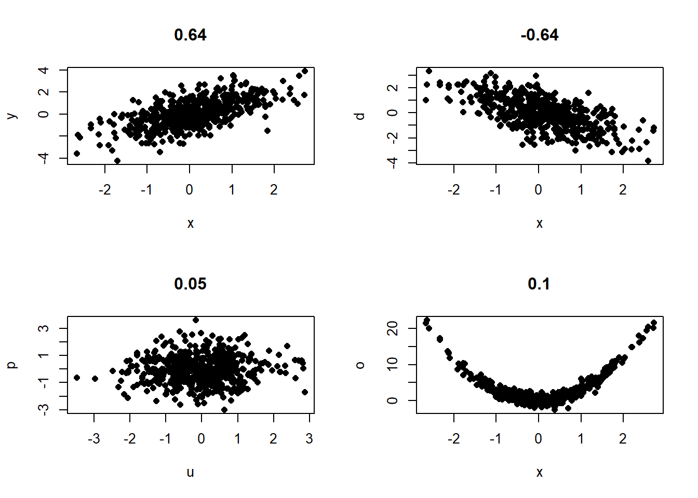
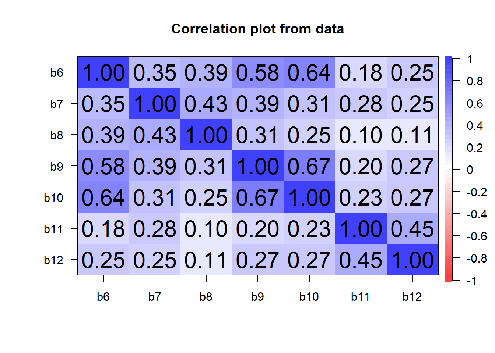

4 Harjoituskerta 4
| Osa | Käsiteltävät asiat (viitteellinen asiasisältö, muutoksia voi tulla) |
| 1 | RStudioon ja R-kieleen tutustuminen |
| 2 | Aineiston kuvailu: frekvenssijakauma, tunnusluvut, kuviot, osa-aineiston poimiminen ja aineston ryhmittäinen tarkastelu |
| 3 | Yksinkertaiset muuttujamuunnokset, kahden muuttujan välinen yhteisvaihtelu, ristiintaulukointi |
| 4 | Korrelaatiot ja hajotakuvio, summamuuttujan tekeminen |
| 5 | Keskiarvotestit: t-testi ja ANOVA |
| 6 | Kertausta ja ohjausta ryhmätehtävään |
4.1 Tarvittavien pakettien asennus
Seuraavassa käytetään joitakin komentoja, joita ei löydy R:n oletuskirjastosta. Seuraavassa asennetaan psych-paketti, joka sisältää persoonallisuuden, psykometriikan ja psykologian tutkimukseen liittyviä työkaluja.
install.packages("psych")## Installing package into 'C:/Users/samuliko/AppData/Local/R/win-library/4.2'
## (as 'lib' is unspecified)## package 'psych' successfully unpacked and MD5 sums checked
##
## The downloaded binary packages are in
## C:\Users\samuliko\AppData\Local\Temp\RtmpmWpqxJ\downloaded_packageslibrary(psych)## Warning: package 'psych' was built under R version 4.2.3##
## Attaching package: 'psych'## The following objects are masked from 'package:ggplot2':
##
## %+%, alpha4.2 Korrelaatio
Kahden muuttujan välisen riippuvuuden astetta voidaan nimittää yleisessä merkityksessä korrelaatioksi. Kun muuttujien välillä on yhteys, muuttujan (a) poiketessa keskiarvosta myös muuttuja (b) poikkeaa keskiarvosta (joko samaan tai päinvastaiseen suuntaan). Jos korrelaatio on voimakasta, voidaan toisen muuttujan arvoista päätellä toisen muuttujan arvot melko täsmällisesti. Jos korrelaatio on heikkoa, muuttujien välillä ei ole yhteisvaihtelua.
Korrelaatiokerroin kertoo riippuvuuden eli yhteyden voimakkuuden. Korrelaatiokerroin vaihtelee välillä -1 ja 1, joista ensimmäinen on täydellinen negatiivinen korrelaatio, ja jälkimmäinen täydellinen positiivinen korrelaatio. Jos kerroin on nolla, muuttujien välillä ei ole (lineaarista) yhteyttä (kts. kuva alla). Kertoimen perusteella ei kuitenkaan voida tehdä päätelmiä muuttujien välisen riippuvuuden suunnasta, ts. että x aiheuttaa y:n.
4.2.1 Korrelaatiokertoimen tulkinta
Yhteiskuntatieteellisessä tutkimuksessa Jokivuoren ja Hietalan (2007, 37–38) mukaan pidetään jo 0.20–0.40 korrelaatiota ‘selvänä’ tai ‘vahvana’. Se, että ihmistieteissä pidetään heikompia yhteyksiä sisällöllisesti merkittävinä, johtuu sosiaalisen todellisuuden kompleksisuudesta. Sosiaalisessa todellisuudessa ilmiötä voivat selittää monet asiat. Esimerkiksi Nummenmaan (2009) mukaan “käyttäytymistieteissä, käytännön tutkimuksessa voidaan esimerkiksi 0.5 suuruisia korrelaatiokertoimia pitää osoituksena voimakkaasta muuttujien välisestä yhteydestä” ja “alle 0.1:n suuruiset korrelaatiot ovat usein käytännössä merkityksettömiä”.
Seuraavassa luodaan neljä kuviota, joissa on kuvattu kahden muuttujan välisiä korrelaatioita. Vasemmalla ylhäällä korrelaatio on noin 0.7 luokkaa ja oikealla ylhäällä noin -0.7. Alarivillä on esimerkit tapauksista, joissa korrelaatiota ei testin mukaan ole. Vasemmanpuolisessa kuvassa testi pitää paikkansa: mahdollinen pieni korrelaatio johtuu kohinasta. Oikeanpuoleisessa tilanteessa testi kuitenkin erehtyy: on selvää, että muuttujat ovat yhteydessä toisiinsa.
par(mfrow = c(2, 2))
n <- 500
x <- rnorm(n)
y <- 0.85 * x + rnorm(n)
d <- -0.85 * x + rnorm(n)
o <- 3*x^2 + rnorm(n)
u <- rnorm(n)
p <- rnorm(n)
plot(x, y, pch = 16, main = round(cor(x, y), 2))
plot(x, d, pch = 16, main = round(cor(x, d), 2))
plot(u, p, pch = 16, main = round(cor(u, p), 2))
plot(x, o, pch = 16, main = round(cor(x, o), 2)) ### Kaksi erilaista korrelaatiokerrointa
Korrelaatiokerroin valitaan sen mukaan, minkälaiset muuttujat ovat kyseessä. Pearsonin korrelaatiokerroin sopii kahden vähintään välimatka-asteikollisen muuttujan keskinäisen (lineaarisen) yhteyden tarkasteluun. Spearmanin korrelaatiokerroin soveltuu, mikäli muuttujat ovat vähintään järjestysasteikollisia ja se mittaa miten samanlainen havaintojen järjestys kahdella muuttujalla on.
4.2.2 Onnellisuuden ja iän välinen yhteys
Tutkimusten mukaan iällä ja onnellisuudella on yhteys. Tarkastellaan seuraavaksi, löydetäänkö tästä aineistosta kyseistä yhteyttä hajontakuvion tai korrelaatioanalyysin avulla.
plot(ess$ikä, ess$c1)
cor(ess[, c("c1", "ikä")], use = "complete.obs", method = "pearson")## c1 ikä
## c1 1.00000000 -0.02875502
## ikä -0.02875502 1.00000000Testin mukaan yhteys on erittäin heikko. R:ssä on useita tapoja saada korrelaatiot esille. Edellä käytetty cor-komento tulostaa vain pelkät korrelaatiokertoimet. Jos halutaan testata, onko korrelaatio tilastollisesti merkitsevä, voidaan käyttää esimerkiksi corr.test-komentoa, joka tulostaa korrelaatiokertoimen, otoskoon sekä tilastollisen merkitsevyyden:
corr.test(ess[, c("c1", "ikä")])## Warning in abbreviate(dimnames(ans)[[2L]], minlength = abbr.colnames): abbreviate used with non-ASCII chars## Call:corr.test(x = ess[, c("c1", "ikä")])
## Correlation matrix
## c1 ikä
## c1 1.00 -0.03
## ikä -0.03 1.00
## Sample Size
## c1 ikä
## c1 1922 1922
## ikä 1922 1925
## Probability values (Entries above the diagonal are adjusted for multiple tests.)
## c1 ikä
## c1 0.00 0.21
## ikä 0.21 0.00
##
## To see confidence intervals of the correlations, print with the short=FALSE optioncorr.test(ess[, c("b6", "b7", "b8", "b9", "b10", "b11", "b12")], method = "pearson")## Call:corr.test(x = ess[, c("b6", "b7", "b8", "b9", "b10", "b11", "b12")],
## method = "pearson")
## Correlation matrix
## b6 b7 b8 b9 b10 b11 b12
## b6 1.00 0.35 0.39 0.58 0.64 0.18 0.25
## b7 0.35 1.00 0.43 0.39 0.31 0.28 0.25
## b8 0.39 0.43 1.00 0.31 0.25 0.10 0.11
## b9 0.58 0.39 0.31 1.00 0.67 0.20 0.27
## b10 0.64 0.31 0.25 0.67 1.00 0.23 0.27
## b11 0.18 0.28 0.10 0.20 0.23 1.00 0.45
## b12 0.25 0.25 0.11 0.27 0.27 0.45 1.00
## Sample Size
## [1] 1925
## Probability values (Entries above the diagonal are adjusted for multiple tests.)
## b6 b7 b8 b9 b10 b11 b12
## b6 0 0 0 0 0 0 0
## b7 0 0 0 0 0 0 0
## b8 0 0 0 0 0 0 0
## b9 0 0 0 0 0 0 0
## b10 0 0 0 0 0 0 0
## b11 0 0 0 0 0 0 0
## b12 0 0 0 0 0 0 0
##
## To see confidence intervals of the correlations, print with the short=FALSE optionKorrelaatioita voidaan tarkastella myös korrelaatiokuvion avulla, josta yhteydet nousevat helpommin esille.
cor.plot(ess[, c("b6", "b7", "b8", "b9", "b10", "b11", "b12")])
4.3 Cronbachin alpha reliabiliteetin mittana
Paketin asentamisen jälkeen voidaan laskea alpha edellä esitellyille muuttujille.
alpha(ess[, c("b6", "b7", "b8", "b9", "b10", "b11", "b12")])## Number of categories should be increased in order to count frequencies.##
## Reliability analysis
## Call: alpha(x = ess[, c("b6", "b7", "b8", "b9", "b10", "b11", "b12")])
##
## raw_alpha std.alpha G6(smc) average_r S/N ase mean sd median_r
## 0.68 0.77 0.79 0.33 3.4 0.0099 6.8 5.2 0.28
##
## 95% confidence boundaries
## lower alpha upper
## Feldt 0.66 0.68 0.7
## Duhachek 0.66 0.68 0.7
##
## Reliability if an item is dropped:
## raw_alpha std.alpha G6(smc) average_r S/N alpha se var.r med.r
## b6 0.65 0.72 0.73 0.30 2.6 0.011 0.020 0.27
## b7 0.63 0.74 0.76 0.33 2.9 0.011 0.033 0.27
## b8 0.68 0.77 0.77 0.35 3.3 0.010 0.025 0.28
## b9 0.63 0.72 0.73 0.30 2.6 0.011 0.019 0.27
## b10 0.63 0.72 0.72 0.30 2.6 0.011 0.017 0.28
## b11 0.67 0.77 0.78 0.36 3.4 0.011 0.025 0.31
## b12 0.64 0.77 0.77 0.35 3.3 0.012 0.028 0.31
##
## Item statistics
## n raw.r std.r r.cor r.drop mean sd
## b6 1925 0.59 0.74 0.71 0.50 5.9 4.3
## b7 1925 0.61 0.66 0.57 0.45 7.7 7.5
## b8 1925 0.40 0.57 0.45 0.32 8.3 3.4
## b9 1925 0.62 0.75 0.73 0.52 5.0 5.3
## b10 1925 0.63 0.74 0.72 0.50 5.2 6.4
## b11 1925 0.73 0.54 0.42 0.43 7.4 14.4
## b12 1925 0.73 0.57 0.46 0.47 8.4 13.5